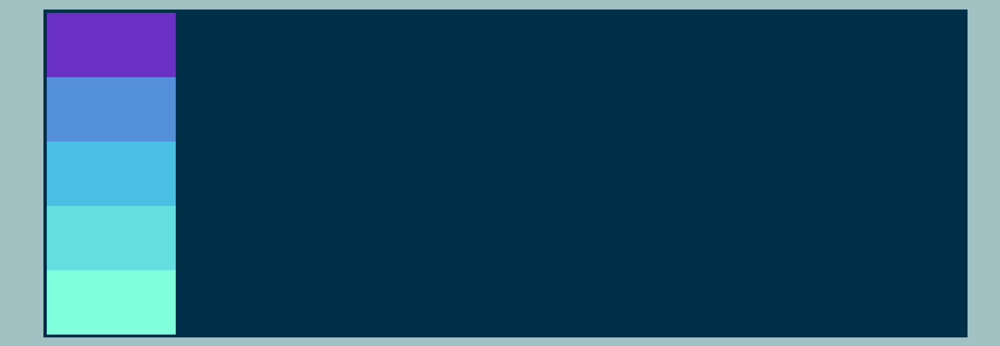

It allows you to easily control the layout of items within a container in a flexible and responsive way.
It allows you to easily align items along a main axis (horizontally or vertically) and a cross axis
(perpendicular to the main axis).
It simplifies the process of creating layouts that work on different screen sizes and devices.
Disadvantages of using flex-direction (and Flexbox in general)
It may not work well with older browsers that do not support Flexbox.
It is not suitable for creating more complex layouts, such as multi-column layouts or grid
systems with
irregularly sized items.
Changing the Flex Model
In the Flex model, we have a main axis which initially goes from left
to right, and a
cross axis which intially goes from top to bottom.
The flex-direction property determines the direction in which the flex items are laid
out within a flex
container.
By default, flex items are laid out in a row from left to right. However,
you
can use
flex-direction to change the direction to a column from top to bottom, or to rows that
are
reversed from
right to left or bottom to top.
To use the flex-direction property, you can add it to
your
CSS code like so:
#container {
display: flex;
flex-direction: column;
/* change direction to a column from top to bottom */
}
flex-direction: row-reverse;
flex-direction:row-reverse (right-to-left)
#container {
display: flex;
flex-direction: row-reverse;
/* change direction to a row from right to left */
}
flex-direction: column-reverse;

flex-direction:column-reverse (bottom-to-top)
#container {
display: flex;
flex-direction: column-reverse;
/* change direction to a column from bottom to top */
}
justify-content
The Flexbox property justify-content is used to align flex items along the main axis of a
flex container. It can be set to
flex-start, center, flex-end, space-between, space-around, or space-evenly.
The justify-content property is used to align flex items along the main
axis of a flex container. Later, you'll see that a property called align-items, which
is used to align items along the cross-axis. In etiher case, the main axis could be the
horizontal
(x-axis) or vertical (y-axis)
axis: it depends on the flex-direction value!
Pros and cons of utilizing justify-content:
Allows for easy alignment of flex items along the main axis of a flex container.
Can be used to create visually pleasing and organized layouts.
Can be used in combination with other Flexbox properties, such as align-items and align-content, to
create more complex layouts.
However, alignment options may be unsuitable for all types of layouts.
Justifying The Content
With justify-content, the property combines with flex-direction to
switch the position of elements within a container. The default property is
flex-start;
There are 6 properties associated with this:
flex-start is the default. This dictates that the flex items are aligned to the
start of the main axis within a flex container. This means that the items will be
aligned
to the left if the flex-directions is set to "row" or to the top
if the
flex-direction is
set to column. justify-content:flex-start; means that the items
will remain in the same direction
as the main axis dictated by the flex-direction property.
center simply does centering of the content around the main axis.justify-content:center; However, it's easiest to visualize if we show an image
outlining a clear use of
justify-content. Here, we will demonstrate how
justify-content:center
works alongside the various flex-direction properties. For simplicity, the default
of
flex-direction:row; is used, but feel free to play around with others as well.
justify-content:center;
justify-content:center; PLUS (clockwise: flex-direction:row; flex-direction
row-reverse; flex-direction:column; flex-direction:column-reverse;
space-between evenly distributes space between the elements. If no
border is set,
the elements push themselves to the furthest points either side of the main axis.
space-around gives even spacing around each element on the main
axis, but usually gives a 'half-space' on the far ends of the axis, while the spaces between
elements is a 'full space'
space-evenly basically puts space around each element on the main-axis, but does so
in a way that means the space around each element in the container is perfectly equal!